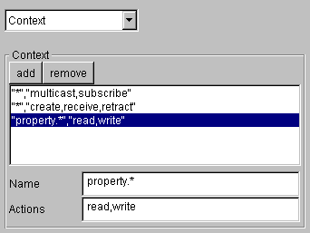

Aglets Specification 1.1 Draft
-
Draft 0.65
-
September, 8th, 1998
-
Author: Mitsuru Oshima,
Guenter Karjoth, and
Kouichi Ono
-
Send comments to aglets@yamato.ibm.co.jp.
This is a draft specification, and is therefore subject to change.
History
-
Draft 0.05
-
A very early draft that was circulated among a limited number of members
for review.
-
Draft 0.06
-
Descriptions of remote messaging, serialization in Aglets, the difference
between readObject/writeObject and listeners, system architecture, Aglets
Server API, and Client API were added.
-
Draft 0.07
-
Descriptions of priority in Messaging and security, written by Dr. Guenter
Karjoth, were added.
-
Draft 0.08
-
The section entitled "Aglet API Overview" was added.
The Lifecycle, Messaging and Migration sections were modified.
Feedback provided by Mima-san was incorporated.
-
Draft 0.09
-
The sections entitled "Class Loading and Mobility" and "HTTP tunneling
via Proxies" were added.
Reviewed by Dr. Guenter Karjoth and Mr. Mike McDonald.
The chapter "Aglets Server API, and Client API" was renamed "Building
Application with Aglets."
-
Draft 0.1
-
The first public release of this document was made, with the Architecture
chapters eliminated. chapter has been eliminated.
-
Draft 0.11
-
The sections entitled "Agent Transfer Protocol" and "Thread Usage in ATP"
were added.
The Overview section of Architecture chapter and the Security chapter
were modified.
-
Draft 0.12
-
The content of the chapter "Building Applications with Aglets" was added.
-
Draft 0.20
-
The second public draft, reviewed by Mr. Mike McDonald.
-
Draft 0.30
-
Package names are renamed, and moved to the beta.
-
Draft 0.50
-
Several chapters and sections has been renamed and improved. ("Object Mobility",
"Class Loading and Mobility", "Architecture Overview"). "Aglet Object Structure"
has been added, and "Security" chapter now describes "beta" security.
-
Draft 0.55
-
Descriptions of Ticket
-
Draft 0.65
-
fine-grained access control with aglets security policy
Introduction
Overview
Aglets are Java objects that can move from one host on the network to another.
That is, an aglet that executes on one host can suddenly halt execution,
dispatch to a remote host, and start executing again. When the aglet moves,
it takes along its program code as well as the states of all the objects
it is carrying. A built-in security mechanism makes it safe to host untrusted
aglets.
System Goals
-
Provide an easy and comprehensive model for programming mobile agents without
requiring modifications to Java VM or native code.
-
Support dynamic and powerful communication that enables agents to communicate
with unknown agents as well as well-known agents.
-
Design a reusable and extensible architecture.
-
Design a harmonious architecture with existing Web/Java technology.
-
[Provide security mechanisms that are comprehensive and simple enough to
allow end users to trust mobile agents]
Aglet Object Model
Aglet API Overview
The Aglet API defines the fundamental functionality of mobile agents. The
following figure shows the major interfaces and classes defined in the
Aglet API and the relationship between these interfaces.
-
com.ibm.aglet.Aglet
The Aglet abstract class defines the fundamental methods (for
example, dispatch(URL)) used to control the mobility
and life cycles of mobile agents. All mobile agents defined in Aglet have to
extend this abstract class. The Aglet.dispatch(URL) primitive causes
an aglet to move from the local machine to the destination specified as its
argument. The Aglet.deactivate(long time) primitive allows an aglet to
be stored in secondary storage, and the Aglet.clone() primitive spawns
a new instance of the aglet that has the same state as the original aglet.
Note that the object returned by the clone primitive is not an
Aglet object but an AgletProxy object.
The Aglet class is also used to access the attributes associated with
an aglet. The com.ibm.aglet.AgletInfo object, which can be obtained
by the Aglet.getAgletInfo() primitive, contains an aglet's inherent
attributes,
such as its creation time and codebase, as well as its dynamic attributes,
such as its arrival time and the address of its current context.
The following table shows some primary methods and their semantics.
| Method |
Behavior |
| dispose() |
Dispose of the aglet. |
| dispatch(URL) |
Dispatch the aglet to the destination specified in the URL. |
| deactivate(long duration) |
Instruct the aglet to store itself into a persistent medium. |
| getAgletInfo() |
Get information on the aglet |
-
com.ibm.aglet.AgletID
All aglet instances have their own unique identities that are immutable
throughout the life cycle of the aglet. An identity may consist of several
attributes such as a user's id, the type of an agent system, and some large
number. The AgletID is an object that keeps an unique identifier for
the given agent, while encapsulating its representation details.
-
com.ibm.aglet.AgletProxy
The AgletProxy interface object acts as a handle of an aglet
and provides a common way of accessing the aglet behind it. Since an aglet
class has several public methods that should not be accessed directly from
other aglets for security reasons, any aglet that wants to communicate
with other aglets has to first obtain the proxy object, and then interact
through this interface. In other words, the aglet proxy acts as a shield
object that protects an agent from malicious agents. When invoked, the
proxy object consults the SecurityManager to determine whether the caller
is permitted to perform the method. Another important role of the AgletProxy
interface is to provide the aglet with location transparency. If the actual
aglet resides at a remote host, it forwards the requests to the remote
host and and returns the result to the local host.
The AgletProxy can be obtained in the following ways:
-
Get an enumeration of proxies in a context by calling the primitive AgletContext.getAgletProxies().
-
Get an AgletProxy for a given AgletID via either AgletContext.getAgletProxy(AgletID)
or Aglets.getAgletProxy(String contextName, AgletID).
-
Get an AgletProxy object by message passing. An AgletProxy
object can be put into the Message object as an argument, and sent to the
aglet locally or remotely.
-
Put an AgletProxy object into the context-property by AgletContext.setProperty(String,Object),
and share the proxy object.
The runtime library is responsible for providing the implementation of
the AgletProxy interface; thus, aglet programmers do not have
to implement this interface.
-
com.ibm.aglet.AgletContext
The AgletContext class provides an interface to the runtime
environment that occupies the aglet. Any aglet can obtain a reference to
its current AgletContext object via the Aglet.getAgletContext()
primitive, and use it to obtain local information such as the address of
the hosting context and the enumeration of AgletProxies, or to create a
new aglet in the context. Once the aglet has been dispatched, the context
object currently occupied is no longer available, and the destination context
object is attached instead when arrived.
The runtime library is responsible for providing the implementation
of this interface; thus, aglet programmers do hot have to implement this
interface.
-
com.ibm.aglet.Message
Aglet objects communicate by exchanging objects of the Message
class. A message object has a String object to specify the kind of the
message and arbitrary objects as arguments. A message can be sent to the
aglet by calling Object AgletProxy.sendMessage(Message msg) ,
FutureReply AgletProxy.sendAsyncMessage(Message msg) , or void
AgletProxy.sendOnewayMessage(Message msg) and it is passed as an argument
to Aglet.handleMessage(Message msg). Please see the section
on messaging for more details.
-
com.ibm.aglet.Ticket
A Ticket object is used to specify both of a destination and a quality
of transfer. In other words, it defines the way in which an aglet is transferred.
It may include the destination, the protocol to be used, and quality such
as timeout, the level of integrity or confidentiality that must be secured.
This object is used where URL were used as the way to specify the destination.
-
com.ibm.aglet.FutureReply
An object of the FutureReply interface is returned by the asynchronous
message-passing and used as a placeholder to receive the result later asynchronously.
With this interface, the receiver can determine whether a reply is available,
and can wait for the result with a specified timeout value so that it can
continue its execution if a reply was not returned within the specified
time.
In the following sections, you will see more classes and interfaces that
allow you to control the activities of an aglet.
Extending the Aglet class
Here are general guidelines for defining a subclass of the abstract Aglet
class.
-
A user-defined Aglet class extends the com.ibm.aglet.Aglet class.
-
It can extend another Aglet implementation class.
-
It may implement a java.io.Externalizable interface to customize
the serialization process of the aglet. But you need to call super.writeExternal
and super.readExternal to properly serialize/deserialize the state
define in the Aglet class.
-
It cannot override pre-defined Aglet API methods, such as dispatch()
and getAgletContext() since these are declared to be final.
-
Unlike normal Java objects, it should not implement a constructor to initialize
the objects because the instance of the Aglet class is initialized after
this instantiation. You should use onCreation method instead.
-
If it implements java.io.Externalizable, the public constructor
without arguments would be needed to successfully deserialize the object.
In addition, the constructor should not have any side effects because the
constructor is called every time the deserialization is taken place.
The following methods of the Aglet class are supposed to be overridden
by a subclass to allow an aglet to implement its own specific behavior:
-
void Aglet.onCreation(Object init)
This method is called only once during its lifecycle, when it is created.
Aglet programmers have to use onCreation(Object init) to initialize
an aglet, because the Aglet API (e.g. dispatch(URL)) is not ready
in the constructor.
-
void Aglet.onDisposing()
This method is called just after the dispose() method is called.
The aglet should release any resources previously allocated. It can perform
additional actions in response to its own disposal.
-
void Aglet.run()
The run() method in the Aglet class is called whenever
an instance is created or resumed. Because this method is called whenever
it occupies the context, this is a good place to define the common task.
-
boolean Aglet.handleMessage(Message msg);
All messages sent to the aglet are passed to the handleMessage
method. Aglet programmers can check whether the incoming message is a known
message, and can perform the task according to the kind of message.
public class HelloAglet extends Aglet {
public void onCreation(Object init) {
System.out.println("created!");
}
public void run() {
System.out.println("hello!");
}
public boolean handleMessage(Message msg) {
if (msg.sameKind("sayHelloAgain") {
System.out.println("hello!");
return true;
}
return false;
}
public void onDisposing() {
System.out.println("bye!");
}
}
Aglet Object and Its Life Cycle
The com.ibm.aglet.Aglet class provides the basic functionality
for a mobile object, and every aglet (aglet objects) has to be an instance
of a subclass of it. To use an aglet, you first has to instantiated
it. There are two ways to create a new instance of an aglet. The first
is to instantiate a completely new aglet from class definitions by calling
AgletContext.createAglet(URL codebase, String name, Object init).
This primitive creates a new instance within the specified context and
initializes it if necessary, then invokes Aglet.onCreation(Object init)
on the created object along with the initializer object passed to the createAglet
primitive. The other way is to create a copy of an existing aglet by using
the Aglet.clone() primitive. The cloned aglet has the same state
as the original one but has a different AgletID object, an thus
a distinct identity.
Once created, an aglet object can be dispatched to and/or retracted
from a remote server, deactivated and placed in secondary storage, then
activated later.
An aglet can dispatch itself to a remote server by calling the Aglet.dispatch(URL
dest) primitive. To be more precise, an aglet occupies the aglet context
and can move from this context to others during its execution. Because
the server may serve multiple contexts within one Java VM, and one host
may serve multiple servers in one host the context are named as the following
set
-
the address of the host, typically IP-address.
-
the port number to which the server is listening.
-
the name of context within the server.
Example:
atp://aglets.ibm.com:1434/context_name
Dispatching causes an aglet to suspend its execution, serialize its internal
state and bytecode into the standard form and then to be transported to
the destination. On the receiver side, the Java object is reconstructed
according to the data received from the origin, and a new thread is assigned
and executed.
Aglets can be persistent. Since a mobile aglet needs to be serializable
into a bit-stream, all mobile aglet can be persistent in nature. The Aglet.deactivate(long
timeout) primitive causes an aglet to be stored in secondary storage
and to sleep for a specified number of milliseconds. After the given time
has passed or another program has requested its activation, the aglet is
activated within the same context where as that in which it was deactivated.
Unlike normal Java objects, which are automatically released by garbage
collector, an aglet object, since it is active, can decide whether or not
to die. If you call the dispose() method to kill the aglet, onDisposing()
is called to perform the finalization suitable for the current state
of the aglet. (Note that this is different from Java's finalizer(),
which is invoked when the object is garbage-collected.) Aglet programmers
are responsible for releasing allocated resources such as file descriptors
or DB connections, because these may not be released automatically.
Once disposed of, the instance becomes an invalid entity, and
any attempt to operate it will result in a SecurityException. (This
may be replaced with another Exception class).
Aglet Events and Delegation Event Model
Java VM does not allow stack frames to be stored or a thread object to be
resumed from them. It is impossible for a thread object to migrate from
one JVM to another while preserving its execution state.
Instead, Aglets uses an event model to give programmers a way of
implementing an action that emulates the migration. When an aglet dispatches,
the Aglet runtime system issues the corresponding event to notify the aglet
that it is being dispatched, or that it is arriving at the destination.
For example, the following code fragment defines the MyListener
class, which implements the MobilityListener interface, and MyAglet,
which extends the Aglet class.
import com.ibm.aglet.Aglet;
import com.ibm.aglet.event.MobilityEvent;
import com.ibm.aglet.event.MobilityListener;
class MyListener implements MobilityListener {
public void onDispatching(MobilityEvent l) {
closeWindow();
closeFile();
}
public void onReverting(MobilityEvent l) {
openWindow();
donNextJob();
}
public void onArrival(MobilityEvent l) {
}
}
public class MyAglet extends Aglet {
public void onCreation(Object init) {
MobilityListener listener = new MyListener();
addMobilityListener(listener);
}
}
The onDispatching() method of the MyListener object is called before
an aglet is actually dispatched, and the onArrival() method is called
after it arrives at its destination. If an aglet has multiple listeners,
they are called in the order in which they were attached. In this way,
an aglet programmer can implement an action such as onDispatching
that should be taken in response to the following events,
regardless of when or by whom an aglet is dispatched.
| When |
Event Object |
Listener |
Method called |
| Just before cloning |
CloneEvent |
CloneListener |
onCloning |
| When clone is created |
CloneEvent |
CloneListener |
onClone |
| After creation of clone |
CloneEvent |
CloneListener |
onCloned |
| Just before dispatch |
MobilityEvent |
MobilityListener |
onDispatching |
| Just before retraction |
MobilityEvent |
MobilityListener |
onReverting |
| After arrival at the destination |
MobilityEvent |
MobilityListener |
onArrival |
| Just before deactivation |
PersistencyEvent |
PersistencyListener |
onDeactivating |
| After activation |
PersistencyEvent |
PersistencyListener |
onActivation |
More than one listener objects can be added. Complex tasks can be divided
into multiple listeners so that some of them can be reused by other aglets.
For example, the following code fragments define the Updater class, which
updates the information on its location registered in a RegistryAglet.
Since this listener object is pluggable, it can be added at runtime and
used for any aglets.
public class Updater extends MobilityAdapter {
AgletProxy _finder;
Message _update_msg = new Message("update");
public Updater(AgletProxy finder, String name) {
_finder = finder;
_update_msg.setArg("name", name);
}
public void onArrival(MobilityEvent ev) {
try {
_update_msg.setArg("proxy", ev.getAgletProxy());
_finder.sendMessage(_update_msg);
} catch (Exception ex) {
}
}
public void removeFromRegistry() {
try {
Message remove = new Message("remove");
remove.setArg("name", _update_msg.getArg("name"));
_finder.sendMessage( remove );
} catch (Exception ex) {
}
}
}
public class Registry extends Aglet {
Hashtable _registry = new Hashtable();
public boolean handleMessage(msg msg) {
if (msg.sameKind("Lookup") {
msg.sendReply(_registry.get(msg.getArg("name")));
} else if (msg.sameKind("Update") {
_registry.put(msg.getArg("name"), msg.getArg("proxy"));
} else if (msg.sameKind("Remove") {
_registry.remove(msg.getArg("name"));
} else return false;
return true;
}
}
One thing programmers should bear in mind is that these listener objects
are called in sequence. Therefore, the listener object being added last
may not be called, depending on the behavior of the former listeners. For
example, if a listener object disposes of the aglet in the onArrival,
subsequent listeners are never invoked.
Note that these event callbacks are also queued and processed one
by one. You may not receive them until the current message handling is
completed. See the section "Messaging in Aglets" for more details.
Object Mobility
Serializing an Aglet Object
When an aglet is dispatched, cloned, or deactivated, it is marshaled into
a byte array, then unmarshaled from it later. Aglets uses the standard Java
ObjectSerialization mechanism to marshal and unmarshal an aglet. While
the serialization is being executed, all objects within the object-graph
starting from an aglet instance are regarded as its state to be marshaled.
Therefore, these objects need to implement the java.io.Serializable
interface or java.io.Externalizable interface, or else they must be
referenced as transient. If a non-serializable object is found in the
object graph, it results in a java.io.NotSerializableException
being thrown.
class ListingAglet extends Aglet {
// result and its contents are transferred.
private Vector result = new Vector();
transient InputStream in = new InputStream(); // will not be transferred
}
Objects Moved by Value
Through the serialization/deserialization process, ordinary objects that
are a part of its state are moved by value. One of the consequences of
this is that once serialized, an object shared by multiple aglets is
copied and is no longer shared after the dispatch, clone and
deactivate/activate operations.
Objects Moved by References
When an aglet proxy is transferred, on the other hand, it keeps the aglet
id and its address, and uses that information to restore the correct reference
to the original aglet. Therefore, AgletProxy objects can keep the reference
to the actual aglet even if the proxy is transferred to a remote host or
deactivated, as long as the aglet resides at the same location.
class Transferrable implements java.io.Serializable {
Hashtable hash; // Hashtable is also serializable
}
class NotTransferrable {
int dummy;
}
class MyClass extends Aglet {
transient FileDescriptor fd; // never get transferred.
int value; // moved by value
String str; // moved by value
Object transferable = new Transferrable(); // move by value
Object not_transferable = new NonTransferable(); // throws NotSerializableException.
AgletProxy proxy; // moved by reference
}
Class Variables
Since a class variable is not a part of an object, the values of class
variables are never serialized. Thus, class variables are local to their
class, and the aglet may obtain a different value when it arrives at a
new destination.
public class MyAglet {
static int class_variable = 0;
public void onCreation(Object init) {
class_variable = 10;
dispatch("atp://next.place");
}
public void run() {
if (class_variable != 10) {
System.out.println("Class variable never get transferred!");
}
}
}
Transferring RMI Objects
The remote interface of RMI is used to define remote objects whose methods
can be invoked remotely. A client-side RMI object (stub) works well with
the Aglets library without modification. That is, when an aglet is dispatched
along with a remote object, the remote object is automatically rebound
to the server object when the aglet is unmarshaled.
However, Aglets cannot handle server objects. Transfer of an RMI server
object results in the creation of another copy of the server object at the
destination site.
public class MyAglet extends Aglet {
RMIHelloImpl impl = new RMIHelloImpl();
String naming = "//naming.com/hello";
public void onCreation(Object init) {
java.rmi.Naming.rebind(naming, impl);
addMobilityListener(new MobilityAdapter() {
void onArrival(MobilityEvent ev) {
java.rmi.Naming.rebind(naming, impl);
impl.hello(); // calling local method
// It cannot be Stub anyway because it's impl!
}
});
}
}
This is a limitation of RMI in JDK1.1. (Note: JDK1.2 supports "unexporting"
of a remote object, which solves the above problem.)
Implementing writeObject/readObject Methods
Aglet programmers who want to customize writeObject/readObject methods
on serializable objects should be aware that onDispatching() is called
while the aglet is running, while writeObject() is called after the
aglet has been suspended. Similarly, readObject() is called while the
aglet is being unmarshaled, which means that Aglet primitives such as
getAgletContext() do not work.
On the other hand, onArrival() is called after the entire aglet has been
restored and activated successfully, so you can call the Aglet API.
Proxy Object Whose Aglet Has Been Dispatched
Currently, the AgletProxy cannot keep track of roaming aglets. Once an aglet
has been dispatched, the proxy previously referencing the aglet is no longer
valid. A mechanism for preserving the reference will be provided in the
future.
Messaging in Aglets
An application or aglets can communicate with other aglets by message passing.
An aglet that wants to communicate with another aglet first has to create
a message object, then send it to the target aglet. A message object has
a kind and an optional argument object. The receiver aglet determine what
to do by checking the kind of received message and get parameters as the
argument object in the Aglet.handleMessage() method.
MyAglet extends Aglet {
public boolean handleMessage(Message msg) {
if (msg.sameKind("doJob")) {
doJob();
} else if (msg.sameKind("shutdown")) {
deactivate(0);
}
}
}
Aglets supports the following types of message passing:
-
Now-type: AgletProxy.sendMessage(Message
msg)
-
A now-type message is synchronous and blocks the current execution until the
receiver has completed the handling of the message.
String answer = proxy.sendMessage(new Message("question"));
System.out.println(answer);
-
Future-type: AgletProxy.sendAsyncMessage(Message msg)
-
A future-type message is asynchronous and does not block the current execution.
The method returns an FutureReply object, which can be used to
obtain the result or wait for it later.
FutureReply future =
proxy.sendAsyncMessage(new Message("question"));
int num_task = 10;
// do private job at most 10 times while waiting for the result.
while(future.isAvailable() == false && num_task-- >0) {
doPrivateJob();
}
System.out.println( (String)future.getReply() );
Note: If an aglet sends a message to itself, the message is not
put at the tail of the queue. Instead, it is placed at the head of the
queue and executed immediately, to avoid deadlock.
-
Oneway-type: AgletProxy.sendOnewayMessage(Message msg)
-
A oneway-type message is asynchronous and does not block the current execution.
It differs from a future-type message in the way it is placed at the tail
of the queue even if it is sent to the aglet itself.
proxy.sendOnewayMessage(new Message("question"));
-
Delegation-type: AgletProxy.delegateMessage(Message msg)
The receiver aglet has to define its handleMessage(Message msg)
method to handle incoming messages. In the handleMessage() method,
a message object is passed as an argument and can be used to perform the
operation according to the kind of message. In the method, you have to
return a boolean value indicating whether it has been handled or not.
public boolean handleMessage(Message msg) {
if (msg.sameKind("sayHello")) {
System.out.println("Hello");
return true; // i know this message...
}
return false; // false, otherwise
}
If it returns false, the sender of the message receives a NotHandledException
and thus knows that the message has not been handled. There is no way of
knowing whether a one-way message has been handled or not.
Future future = proxy.sendAsyncMessage();
...
try {
Object reply = future.getReply();
} catch (NotHandledException ex) {
// the receiver didn't handled the message
} catch (MessageException ex) {
// an exception has been thrown in the receiver's handleMessage()
System.out.println(ex.getException());
}
Messages in Aglets also support acknowledge-type replies, whereby the receiver
can send the reply (result) even before completing the handling of the
message. When you have a return value, you need to use this interface to
return the value. Once you send a reply via the Message.sendReply()
method, you cannot send a reply again, and the return value of handleMessage
will be ignored.
public boolean handleMessage(Message msg) {
if (msg.sameKind("accessDB")) {
openDB(); // pseudo code
Object reply = accessDB(msg.getArg());
msg.sendReply(reply);
closeDB();
return true; // i know this message...
}
return false; // false, otherwise
}
Message Queue and Priority
Every aglet object has a message queue object. All incoming messages are
stored in the message queue, and then handled one by one. The messaging
in Aglets follows the transmission-ordering law; that is, messages
arrive in the order in which they were sent. For example, if you send messages
in the order "A", "B", "C", the receiver receives them in the same order
"A", "B", "C".
queue
[A] -> {}: Aglet
[B] -> {[A]}: Aglet
[C] -> {[B][A]}: Aglet
{[C][B]}: Aglet ( handling [A] )
{[C]}: Aglet ( handling [B] )
{}: Aglet ( handling [C] )
You can specify the priority associated with kinds of messages. The messages
with high priority will be handled before messages with lower priority.
Because the message is handled concurrently, giving the priority does not
guarantee the order. It is simply to increase the likelihood that a certain
message is handled earlier than the other.
Suppose that there are three messages in the queue, with the priorities
3, 5, and 6, and that you send two messages with priorities 4 and 7 asynchronously.
Even if you sent the message with priority 4 first, the message with priority
7 will be handled first.
{[3][5][6]}: Aglet
[4] -> {[3][5][6]}: Aglet
[7] -> {[3][4][5]}: Aglet (handling [6])
{[3][4][5][7]}: Aglet (handling [6] cont'd)
{[3][4][5]}: Aglet (handling [7])
Aglets also supports a NOT_QUEUED priority, whereby the message is not
queued. Suppose the Message [D] has priority NOT_QUEUED; then that message
will be passed to an aglet and handled immediately in parallel.
[A] -> {}: Aglet
[B] -> {[A]}: Aglet
[D] -> {[B][A]}: Aglet
{[B]}: Aglet ( handling [A] ) ( handling [D] )
{}: Aglet ( handling [B] ) ( handling [D] )
{}: Aglet ( handling [D] )
You can set priority of the message by the primitive MessageManager.setPriority(String,
int), and a MessageManager object of the agent can be obtained via
Aglet.getMessageManager() primitive.
Synchronizing Messages
Although messages are normally handled one by one, it often happens that
the thread currently handling the message has to wait until the aglet's
state meets some condition, or has to inform the waiting thread or incoming
message that the condition is satisfied. The Aglet messaging API supports
monitors to describe those concurrency in the similar way to Java.
The Aglet API has five methods to synchronize messages.
-
Aglet.waitMessage();
Aglet.waitMessage(long timeout);
-
Aglet.waitMessage() causes the current thread to wait until another
message instructs it to resume its execution. Only the thread that owns
the monitor can call this method and wait. Otherwise, the IllegalMonitorStateException
is thrown.
If another thread that is handling another message instructs the waiting
thread to resume the waiting thread by calling Aglet.notifyMessage(),
it wakes up and resumes execution. If it is not instructed to resume, it
will wait forever until it is stopped. On the other hand, the waitMessage(long
timeout) is used to wait at most for timeout milliseconds, and
wakes up when the specified timeout expires.
-
Aglet.notifyMessage();
Aglet.notifyAllMessages();
-
Aglet.notifyMessage() instructs the waiting thread to wake up
and resume execution. The caller thread is put at the head of the message
queue and waits until the resumed thread completes the message handling
or exits the monitor. Only the thread that owns the message-handling monitor
can call this method. Otherwise the IllegalMonitorStateException will be
thrown.
queue waiting
{[D][C]}: Aglet {[A][B]}
{[D]}: Aglet {[A][B]} (handling[C] calls notifyMessage())
{[D][C]}: Aglet {[B]} (handling[A])
Aglet.notifyAllMessages() causes all waiting threads to wake up
one by one. These threads are placed at the head of the message queue and
the oldest waiting thread is immediately resumed. The caller thread is
placed at the next position of these thread and will be resumed alter these
resumed thread has completed.
queue waiting
{[D][C]}: Aglet {[A][B]}
{[D]}: Aglet {[A][B]} (handling[C] calls notifyAllMessages())
{[D][C][B]}: Aglet (handling[A])
-
Aglet.exitMonitor();
-
The exitMonitor() method causes the current execution thread to
release the monitor owned by the thread. Then the next incoming message
in the queue (if any) will be executed. Note that exitMonitor()
does not activate the waiting messages but only the incoming messages.
queue
{[C][B]}: Aglet (handling[A]* calls exitMonitor())
{[C]}: Aglet (handling[B]*) (handling[A])
Note: * indicates the owner of the monitor
With this API, you can implement a background task while receiving the
message.
public void SiteWatcherAglet extends Aglet {
public void run() {
exitMonitor(); // now the next message would start.
while( condition == true) {
watchSite("http://home/index.html");
}
}
}
The following "StackAglet" example illustrates how synchronization between
messages can be achieved.
public StackAglet extends Aglets {
static int capacity = 10;
Object stack[] = new Object[capacity];
int num = 0;
public handleMessage(Message msg) {
if (msg.sameKind("push")) {
push(msg);
} else if (msg.sameKind("pop")) {
pop(msg);
} else if (msg.sameKind("isFull")) {
msg.sendReply( num == capacity);
} else if (msg.sameKind("isEmpty")) {
msg.sendReply( num == 0 );
} else return false;
return true;
}
private void push(Message msg) {
while (num == capacity) {
waitMessage();
}
stack[num++] = msg.getArg();
if (num==1) {
notifyMessage(); // wake up "pop" message
}
}
private void pop(Message msg) {
while(num==0) {
waitMessage();
}
msg.sendReply(stack[--num]);
if (num == (capacity -1)) {
notifyMessage(); // wake up "push" message
}
}
}
Remote Messaging in Aglets
Aglets supports remote message passing, and aglet objects can communicate
by messages remotely as well as locally. While local messaging can pass
any kinds of object as arguments, arguments or return value passed by
remote messaging can be of any Java type that implements
java.io.Serializable, and are marshaled and unmarshaled by
ObjectSerialization.
Sending a remote message is different from dispatching an aglet in a sense
that a remote message does not cause any transfer of bytecode, and
therefore the classes used in the message have to be installed in both
hosts.
Remote message passing can be used as a lightweight way of communicating
between aglets that reside on the different hosts, and can reduce the network
traffic, the cost of defining classes, and security issues, while dispatching
an aglet can take advantage of locality, for example disconnected operations
or intensive interaction with hosts.
Exception Handling in Aglets
T.B.D.
System Architecture
Architecture Overview
The Aglets architecture consists of two layers, and two APIs that define
interfaces for accessing their functions.
The Aglets runtime layer is the implementation of the Aglet API, and defines
the behavior of the API components, such as AgletProxy and AgletContext.
It provides the fundamental functions for aglets to be created, managed,
and dispatched to remote hosts.
The communication layer is primarily responsible for transferring a
serialized agent to a destination and receiving it. It also supports
agent-to-agent communication and facilities for agent management.
Aglets Runtime Layer
The Aglets runtime layer implements Aglets interfaces such as AgletContext.
It also consists of a core framework and subcomponents. The core framework
provides the following mechanisms fundamental to aglet execution:
- Serialization and deserialization of aglets
- Class loading and transfer
- Reference management and garbage collection
The subcomponents are designed to be extensible and customizable because
these services may vary depending on requirements or environments. For
example, the PersistenceManager for applets may store deactivated aglets
only in the memory, or else on the Web server if it can do so. In other cases,
it may have to use the default security manager set by the Web browser.
-
PersistenceManager
The PersistenceManager is responsible for storing the serialized agent,
consisting of the aglet's code and state into a persistent medium such as a
hard disk.
-
CacheManager
The CacheManager is responsible for maintaining the bytecode used by the
aglet. Because the bytecode of an incoming aglet needs to be transferred when
the aglet moves to the next destination, the CacheManager caches all bytecode
even after the corresponding class has been defined.
-
SecurityManager
The SecurityManager is responsible for protecting hosts and aglets
from malicious entities. It hooks every security-sensitive operation and
checks whether the caller is permitted to perform it. There is only one
instance of SecurityManager in the system, and it cannot be altered once it has
been installed.
These components are defined as an interface or an abstract class, so
server developers can implement these components for their own use and plug
them into the runtime. Unfortunately, APIs for these components are intended
for the people who develops the server but not for aglets application
programmers, and are thus not public and not available to ordinary users at
present.
Communication Layer
The Aglets runtime itself has no communication mechanism for transferring the
serialized data of an aglet to destinations. Instead, the Aglets runtime
uses the communication API that abstracts the communication between agent
systems. This API defines methods for creating and transferring agents,
tracking agents, and managing agents in an agent-system- and
protocol-independent way.
The current Aglets uses the Agent Transfer Protocol (ATP) as the default
implementation of the communication layer. ATP is modeled on the HTTP protocol,
and is an application-level protocol for transmission of mobile agents.
To enable remote communication between agents, ATP also supports
message-passing.
Communication API (MASIF for Java)
The communication API used by Aglets runtime is derived from the OMG standard,
MASIF
(Mobile Agent System Interoperability Facility), which allows various
agent systems to interoperate. This interface abstracts the communication
layer by defining interfaces and providing a common representation in Java
that conforms to the IDL defined in the MASIF standard.
// MAF IDL
module MAF {
.....
struct Name {
Authority authority;
Identity identity;
AgentSystemType agent_system_type;
};
....
interface MAFAgentSystem {
// Agent creation and transfer
Name create_agent(in Name agent_name, ...) raises (..);
void receive_agent(in Name agent_name,
in AgentProfile agent_profile,
in octet_string agent, ...) raises (..);
// Agent management
void get_agent_status(in Name agent_name) raises (..);
void list_all_agents(in Name agent_name) raises (..);
void suspend_agent(in Name agent_name) raises (..);
void resume_agent(in Name agent_name) raises (..);
void terminate_agent(in Name agent_name) raises (..);
// etc...
}
}
Although MASIF interfaces are intended for CORBA objects, the interfaces
actually defined in Aglets are not CORBA-based. In fact, they are
defined as normal Java classes, interfaces or abstract classes that act as
common wrappers for the protocols actually being used. Thus, it is possible
and easy to use various kinds of protocol other than CORBA/IIOP
such as ATP and RMI.
We chose this approach because relying on the specific transport protocol
or the specific transport mechanisms has at least two disadvantages. First,
it would be technically inadequate to require mobile agent systems to use
a specific protocol unless it became pervasive and widely supported. One of
the benefits of mobile agents is in their ability to hide the existence of
network communication. Second, some Java environments such as PersonalJava have
neither RMI nor CORBA as their core API. Therefore, it would be more
practically desirable if the runtime could choose the communication mechanisms
in accordance with its system requirements.
Communication Layer Architecture
The following figure shows the architecture of the communication layer.
com.ibm.maf.MAFAgentSystem is an abstract class that defines
a set of methods equivalent to the MASIF interface. There are two kinds of
class that extend this abstract class. One is an implementation class
that provides the agent system facility, and the other is a stub object that
transfers a request to a destination.
An application or client uses a stub object to send a request to the
destination. An agent system must have a stub class for each protocol it
supports. Applications or clients can then get and use a stub object for a
given protocol. Note that it is an agent system's responsibility to instantiate
and manage stub objects. The latest beta (as of this writing) version of
Aglets supports two protocols, ATP and RMI.
On the other hand, an aglet server has an implementation of
MAFAgentSystem that actually handles the requests. It is the
agent-system provider's responsibility
to provide the implementation of MAFAgentSystem. Aglets has the com.ibm.aglets.MAFAgentSystem_AgletsImpl
class as an implementation. Furthermore, a server has one or more daemons
to accept requests from a sender. A server may support multiple protocols
by having multiple daemons to handle each protocol. When a daemon accepts
requests, it then forward these requests to the MAFAgentSytem_AgletsImpl.
Note:
CORBA-based transport layer will be provided in a future release
of Aglets.
Aglet Object Structure
An AgletRef object is an internal representation of an aglet
object. It has all necessary components for the aglet a MessageManager to
control incoming messages, and a ResourceManager to manage resources consumed
by the aglet and to manage its related resources such as security information
and the AgletInfo object. It is also the implementation of the abstract
methods defined in Aglet class. It implements most of the
functionality to be provided by the com.ibm.aglet.Aglet class.
The AgletRef object is what the aglets framework deals with. The latter
has a reference table to store the mapping from the AgletID to the actual
aglet instance. An AgletRef object is created and inserted into this table
when an aglet is created or arrives, and removed from it when the
aglet is dispatched or disposed of.
Message Manager
An aglet has a MessageManager object, which governs all incoming messages
sent to the aglet. The MessageManager manages and controls the order and
concurrency of these messages. See the Messaging section
for more details.
Resource Management
An aglet uses local resources such as files or threads to carry out its
tasks during its lifetime. It may open a dialog window to interact
with users, or create a new thread to perform some concurrent task.
These resources are managed by a ResourceManager object, which is allocated
for each aglet. Currently all threads and windows created by the aglet
are managed by this ResourceManager. When an aglet is
dispatched, deactivated, or disposed of, these two resources are
immediately stopped and disposed of.
Other kinds of resources such as file and socket, however, are not captured
by this manager. It is left to the garbage collector to decide
whether or not such resources will be released, and if so when.
Therefore, the programmer must release them manually to ensure
their immediate release.
Garbage Collection of Aglet Objects
Unlike normal Java objects, aglets are never garbage-collected (GC)
automatically, because an aglet is active and has its own threads of control.
An aglet programmer needs to explicitly dispose of an aglet.
When an aglet has been dispatched, deactivated, or disposed of, the
AgletRef object is removed from the reference table. In addition, the internal
reference to that aglet and associated components such as MessageManager
object or properties are set to null so that the garbage collector
can sweep up these dangling objects.
This means that if you have a live reference to this aglet elsewhere,
it will not be GCed. For example, if you have a reference to the static
variable of the class, it will not be GCed.
public MyAglet extends Aglet {
static MyAglet aglet = null; // the previous one may be GCed.
public void onCreation(Object init) {
aglet = this; // keep the reference
}
}
Class Loading and Transfer
In mobile agent systems, classes for an agent need to be available at the
server on which the agent is running. The class of an agent needs to be
available at the server at the time of creation, and to be available at the
destination to which it moves. Therefore, a mobile agent system needs to have
a facility for loading bytecode on demand, or for transferring the bytecode
along with the agent.
Aglets supports two schemes for transferring bytecode more efficiently
ways, and also make use of a cache to reduce unnecessary downloading of
classes.
It is important for aglet programmers to understand class mobility,
how a class is loaded, and when a class is transferred. The rules of
class mobility are explained in the following sections:
-
Class Loading.
How a class is chosen and loaded.
-
Class Transfer.
Which classes are transferred and when.
-
Class Resumption and Evolution.
How a class loader is chosen and a class is resumed within it.
Class Loading
In Aglets, a class for an aglet is determined dynamically at runtime; thus,
the class for the aglet needs to be loaded dynamically on demand. This dynamic
class-loading may also happen at certain points in the aglet's execution,
such as when it is visiting other hosts as well as the original host.
Java has a special class, called ClassLoader, that is capable of
defining a new class from bytecode. Once a class has been defined by the
class loader, all requests for new classes within that class are handled by
that class loader. Aglets has a dedicated subclass of ClassLoader,
called AgletClassLoader.
Each aglet is associated with exactly one class loader, and all classes
required by the aglet are managed by that class loader. (Note that one
class loader may manage multiple aglet instances.) Suppose there is an
aglet
Ex.1
class MyAglet extends Aglets {
MyDialog dialog = null;
public void onCreation() {
dialog = new MyDialog();
}
}
and that both MyAglet and MyDialog classes are placed in the codebase below:
atp://aglets.codeserver.com/public
In this example, both MyAglet and the MyDialog classes are managed
by one AgletClassLoader.
How a class is chosen
There may be several sources of the bytecode of a given class.
It is therefore worth understanding which class definition is actually chosen by the class loader and used. AgletClassLoader maintains a cache table for
classes formerly defined by the class loader, and it first looks up a
definition in that cache table. If a definition is not found in the cache
, it asks the system class loader to load it from CLASSPATH (for security).
If this is not successful either, it defines a new class by extracting
bytecode from CacheManager if this is available, or by loading from
the codebase otherwise. Once the new class has been defined, it is cached in
the cache table and will be reused by other aglets later.
Ex.2
class MyAglet2 extends Aglets {
MyDialog dialog = null;
String str = "Hi";
// LocalData is installed on the CLASSPATH
LocalData data = new LocalData();
public void onCreation(Object init) {
dialog = new MyDialog();
}
}
If MyAglet2 is loaded by the same classloader of MyAglet, the cached
class is used to resolve the MyDialog class. If it is loaded by a different
classloader, it will use the bytecode in the CacheManager to define a new
MyDialog class in the class loader. Since both the java.lang.String
class and the LocalData class are locally available on the CLASSPATH,
they will be loaded by the system class loader and then become system classes.
Class Transfer
As mentioned before, there are two possible ways of bringing bytecode to the
server. The first is to download and define a class on demand after an
aglet moves, and the second is to transfer bytecode as an agent moves.
Aglets supports these two schemes, and in some case uses a combination of the
two. This subsection illustrates the rules according to which classes are
transferred.
Which Class is Transferred?
Since an aglet needs its classes in order to execute, it is very important
to understand which class is transferred and which is resident, so as to
ensure that the aglet can complete its execution. If even one of the necessary
classes has not been transferred, execution of the aglets will fail.
Aglets classifies Java classes into four categories, according to where
they came from, and manages them in different ways:
-
Archived Classes
- Classes that are archived in the JAR file.
-
Codebase Classes
- Classes that are loaded from the aglets' codebase.
-
System Classes
-
Classes that are loaded from CLASSPATH and thus do not have a codebase.
-
Others
-
An aglet might refer to other classes that are loaded from other codebases
by other aglets. This happens when an aglet receives a message that includes
as an argument an object whose class was loaded from the sender's codebase.
If the class is archived in the JAR file specified as the aglet's codebase,
all bytecode in the archive are simply transferred as the aglet moves,
and is stored in the CacheManager. Therefore, if MyAglet and MyDialog
are archived in the JAR file, both files are transferred along with the aglet
itself. Note that what is guaranteed is only that "bytecode" is transferred
to and available at the destination. The class actually used by the aglet
whose execution is resumed at the destination is chosen according to the
above rule.
If no archive is specified, only classes loaded from the codebase are
transferable along with the aglet. By this we mean that all classes located
in the aglet's codebase can be transferred when it moves except when
a class with the same name exists on the CLASSPATH.
Such system classes are never transferred. In that of Ex.2, the bytecode of
the LocalData class would never be transferred while that of
MyDialog might be. The set of classes to be transferred are determined
at runtime in the serialization process. That is, the classes of all objects
visited during the serialization are collected and transferred.
Note that the class of a reference with null value is never transferred.
So what happens if such a reference exists and the class is used after the
aglet is dispatched? Let's take a look at an example:
Ex.3
class MyAglet extends Aglet {
MyDialog dialog = null;
public void onCreation(Object init) {
addMobilityListener(new MobilityAdapter() {
public void onArrival(MobilityEvent ev) {
// create MyDialog after arriving at the destination.
dialog = new MyDialog();
}
});
dispatch(....);
}
}
Since the reference "dialog" is null, the MyDialog class is not transmitted
when the aglet is dispatched. Instead, the aglet is sent without the MyDialog
class and then searches for the MyDialog class after it arrives. Because it
tries to load the class by following the class loading rule explained above,
it may load the class definition from its codebase, or it may use the cached
class, if any exists.
If you want to make sure that such classes are also transferred,
you may include the class instance as its state, like this:
Ex.4
class MyAglet extends Aglet {
MyDialog dialog = null;
Class class_used_later = MyDialog.class;
}
This forces the system to transmit MyDialog along with the aglet.
Finally, if an aglet attempts to transfer an object whose class loader
is different from the aglet's class loader, it fails with a SecurityException.
This is because Aglets does not allow an aglet either to load a class from
two different codebases or to extract the bytecode from other aglets, for
security reasons.
Class Resumption and Evolution
When an aglet arrives at the destination, bytecode in the stream is retrieved
and cached in the CacheManager. They are then used by a ClassLoader to
define the classes needed to reconstruct the aglet.
Since ClassLoader cannot define two classes with the same name, the old
class already stored in the cache may be used even if the updated class
has been sent. This would cause a problem in deserializing objects
because the serialized data might not compatible with it. Even worse, the
class will behave differently.
Ex.5
// old class
class MyAglet extends Aglet {
MyDialog dialog = new MyDialog();
}
// revised class
class MyAglet extends Aglet {
MyDialog dialog = new MyDialog();
public void onCreation(Object init) {
dialog.show(); // I forgot to show the dialog..
}
}
# MyAglet must be used at the destination
Even if you fix the source code (Ex.5), you may get the same result as
before because it might be cached. Therefore, a class definition must be
forcibly updated as it evolves, while the cost of transmitting and defining
new classes must be reduced. The Aglets solves this problem by allocating
different class loaders for different sets of classes. In the following
section, we describe how a class loader is chosen and when one is newly created.
To avoid the version conflict problem, Aglets sends the information on the
version of a class as well as its name along with the class definition.
AgletClassLoader also maintains this information in the cache.
This version information is taken from the MANIFEST
file in a JAR archive or computed at runtime.
With this information, the receiver can find out what classes are used
within the aglet even before receiving all the bytecode. Thus, it can determine
the class loader that matches the information in the "ClassLoader cache".
Note that only classes sent along with the aglet are evaluated
in searching the class loader. If an aglet requires another class that has
not appeared in this version table since the aglet arrives
(MyDialog in Ex.3), the same problem may occur.
Note that Aglets does not support the automatic version detection of aglets
created from plain codebase (without JAR). You may therefore get an
old version of classes. We recommend you to use a JAR archive if you want to
make sure that the correct version is used for creation.
Other Considerations in Class Mobility
Efficiency
Not surprisingly, in most cases sending all classes would not be efficient,
since it would consume unnecessary bandwidth. But if we can assume that the
likelihood of the availability of classes is high, it would be possible to
reduce the cost of transmitting an agent by not sending class definitions. This
assumption may hold in most cases, since a mobile agent is quite often sent
to the same destination.
The current Aglets, however, sends as much bytecode as possible,
because the above scheme has several drawbacks and the *best* scheme is
not yet established. For example,
-
This scheme is not always faster than the current scheme.
-
The source of classes for an aglet may not be available when
it arrives, owing to presence of a firewall or the failure of a node.
-
It might be possible to keep bytecode in the cache at the sender node in
advance, but this raises other issues such as when the bytecode should be
uploaded and when it should be garbage-collected.
We understand that there must be a more efficient way than the current
approach, and such a scheme will be adopted as Aglets evolves.
Class Mobility in Remote Messaging
Aglets supports remote message passing, and aglet objects can communicate
through messages remotely as well as locally. Parameter objects or return
values passed by remote messaging can be of any Java type that implements
java.io.Serializable or Java primitive types, and they can be marshaled
and unmarshaled by ObjectSerialization. Sending a remote message is different
from dispatching an aglet in the sense that a remote message does not
cause any transfer of bytecode. Instead, the classes of objects passed
along with a message must be available at both sites, either as the system
class installed or as the aglets's codebase class.
Security
When bytecode is being transferred, the runtime consults the SecurityManager
to determine whether the aglet is allowed to carry it out. When bytecode
is carried in, the runtime consolts the SecurityManager to determine whether
the aglet is allowed to carry the bytecode into the runtime and to define the
class. Furthermore, a request from an aglet that left the server to fetch a
class file must also be referred to the SecurityManager. If the requested
file is not allowed to be fetched, the SecurityManager refuses the request.
Agent Transfer Protocol
ATP is a simple application-level protocol designed to transmit an agent
in an agent-system-independent manner. An ATP request consists of a request
line, header fields, and a content. The request line specifies the method
of the request, while the header fields contain the parameters of the request.
ATP defines the following four standard request methods:
-
Dispatch
-
The dispatch method requests a destination agent system to reconstruct
an agent from the content of a request and to start executing the agent. If
the request is successful, the sender must terminate the agent and release
any resources consumed by it.
-
Retract
-
The retract method requests a destination agent system to send a specified
agent back to the sender. The receiver is responsible for reconstructing
and resuming the agent. If the agent is successfully transferred, the receiver
must terminate the agent and release any resources consumed by it.
-
Fetch
-
The fetch method is similar to the GET method in HTTP; it requests a receiver
to retrieve and send any identified information (normally class files).
-
Message
-
The message method is used to pass a message to an agent identified by a
agent-id and to return a reply value in the response. Although the protocol
adopts a request/reply form, it does not lay down any rules for a scheme of
communication between agents.
See the ATP
specification for more details.
HTTP Tunneling via Proxy Servers
The ATP layer normally attempts to make a direct connection to hosts on
the network. In almost all intranet situations, however, there is a firewall
that prevents users from opening a direct socket connection to an external
node. This means that an aglet cannot be dispatched or retracted through
the firewall. To make it possible, the ATP layer supports a technique called
HTTP tunneling that enables an ATP request to be sent outside of the firewall
as a HTTP POST request and the response to be retrieved as the HTTP response.
In addition, the Aglets server has to be somehow capable of receiving that
HTTP-wrapped ATP request. Therefore, the Aglets server can be configured
so that it can receive an HTTP POST message with the content type "x-atp"
and can unwrap the ATP request. If it receives an HTTP-wrapped ATP request,
it sends an HTTP response in the same way.
Configuring a Sender
To send a HTTP tunneling request, you have to specify the HTTP proxy host
to be used:
-
Open the Network Configuration panel by selecting:
Options -> Network Preference
-
Check the "Use HTTP Proxy" in the "HTTP Tunneling" panel.
-
Type the host name and port number of the proxy server.
-
Input the beginning string or ending string of the address for which you
do not want to use a proxy.
-
Press the OK button
Configuring a Receiver
To receive an HTTP tunneling request, a receiver has to be configured so
that it can receive an HTTP-wrapped ATP request:
C
-
Open the Network Configuration panel by selecting.
Options -> Network Preference
-
Check the "Accept HTTP Tunneling Request" in the "HTTP tunneling" panel.
-
Press the OK button.
Limitation of HTTP Tunneling
Because the firewall allows only a one-way connection to the outside, the
dispatched aglet cannot fetch a class on demand. Make sure that all necessary
classes are stored in the stream and transferred to the destination either by
making references to those classes inside the object, or by putting them into
one JAR archive and specifying it as the aglet's codebase.
Furthermore, it is impossible for an aglet to dispatch itself back into
the intranet through the firewall. To get back inside a firewall, an aglet
has a unique primitive, called retract, which lets a client "pull"
the dispatched aglet from a remote site. This allows you to dispatch
an aglet outside the firewall and get it back into the intranet.
Security in Aglets
Security is essential to any mobile agent system, because accepting
a hostile agent may lead to your computer being damaged or your privacy
intruded upon. For secure agent execution, the agent system must provide the following
security services:
-
Authentication of the Sender, the Manufacturer and the Owner of the Agent.
-
Who is responsible for this agent?
-
Who is responsible for the agent code?
-
Has the agent (code and state) been tampered with?
-
Authorization of the Agent (or Its Owner)
-
What can this agent do? (E.g, can this agent access files?)
-
Secure Communication between Agent Systems.
-
Can the agent protect its privacy?
-
Non-repudiation and Auditing.
-
How can we ensure that a deal has been actually carried out?
-
Security-sensitive activities of agents must be recorded,
and an administrator must be able to audit them.
In mobile agent systems, agents must present proper user identities
so that agent systems can control them according to the access rights of the
users and the agent's manufacturers. It is therefore important for agent
systems to be able to authenticate an agent's user and manufacturer.
The former is much more difficult than the latterr.
It is reasonably easy to identify the manufacturer by code-signing.
However, it is difficult to verify the ownership of the agent since the state
of the agent varies during its travels, and it is practically impossible to
sign the state part of the agent.
Aglets uses an organizational approach whereby all agent systems in
a certain domain are deemed trustworthy, and evaluates the authenticity of the
agent depending on the domain in which it has been roaming around. A user
first authenticates himself/herself to the system, and the system then issues
the credentials of the user's agent.
The agent system then evaluates the authenticity of the credentials,
to determine whether or not they were issued within the same domain.
It may downgrade the authenticity or simply deny access, depending on
conditions such as where the agent has traveled and so forth.
Host authentication is used to identify the domain to which the
communicating host belongs.
Although the current Aglets does not fully support these services because of
the limited support for encryption in JDK, it does provide a reasonable
level of security to make it safe to use mobile agent applications. The
following security features are supported in the latest Aglets runtime:
-
Authentication of users and domains.
-
Integrity checked communication between servers within a domain.
-
Fine-grained authorization similar to the JDK1.2 security model.
Domain Authentication
Aglet servers are able to authenticate whether the contacting server belongs
to a certain domain. All servers that belongs to one domain share a secret key,
and can authenticate the contacting server by means of that secret key
using MAC (Message Authentication Code: a secure hash value
computed from a content and nonce value).
The advantage of this is that MAC does not have to be signed by means of
encryption algorithms, and it can simply be implemented on top of vanilla JDK.
After the authentication between servers has been established, the credentials
of the aglet are sent along with the aglet. The receiver will then decide
how much it trusts the credentials sent by the server on the basis of the
information obtained by the host authentication. In Aglets, the server simply
trusts the credentials if they were sent from the server in the same domain.
To use the domain authentication, each user (or server administrator)
needs to obtain the secret key of the domain from the domain authority.
The domain authority is responsible for generating a domain key for a
specific server. The shared secret key is signed with the user's password,
and thus the user is required to give the correct user id and password to make
it effective. This key file must be kept secret, because it is not encrypted.
One disadvantage is that it cannot identify and verify the communicating
hosts. Once the shared key is stolen from a server in the domain,
there is no way of distinguishing valid servers and the server from which the
key was stolen. As a result, all servers in the same domain are exposed
to dangers.
Integrity-Checked Communication
Since all aglet servers within one domain share a secret, the integrity
checking can be done in the same way as that described under the domain
authentication. The sender computes the MIC (Message Integrity Code;
same as MAC) value of the the content and the shared secret, and sends
it along with the nonce and the content.
The receiver then verifies the MIC by using the nonce, the content and the
secret maintained by the receiver itself. Because only a server that knows the
secret can generate the same MIC, the receiver can make sure that the content
was sent by a server in the same domain and has not been tampered with.
Program Identification
In the current Aglets, the identification of the agent code uses only its
codebase. As of the time of writing, code signing is not supported.
Authorization of Aglets
When an aglet accesses the security-sensitive information and resources such
as Java properties, threads, and/or any other external resources such as files,
it must be controlled under the permissions given to the aglet. The permissions
can be specified either by a GUI or by direct editing of the policy database.
The format of the policy database used by Aglets is designed to conform
to that in the JDK1.2 specification. A user can specify the following
permissions in the policy database.
java.io.FilePermission : File read/write/execute
java.net.SocketPermission : Socket resolve/connect/listen/accept
java.awt.AWTPermission : showWindowWithoutWarningBanner, accessClipboard
java.util.PropertyPermission : Java property
java.lang.RuntimePermission : queuePrintJob, load library
java.security.SecurityPermission : getPolicy, setSystemScope
java.security.AllPermission : all other permissions
com.ibm.aglets.security.ContextPermission : context property, start, shutdown
com.ibm.aglets.security.AgletPermission : dispatch, deactivate, etc.
com.ibm.aglets.security.MessagePermission : messaging
-
com.ibm.aglets.security.ContextPermission
-
ContextPermission specifies whether an aglet can access the
context property, shutdown the context, etc. The name for a ContextPermission
can be one of the following:
"start", "retract", "create.<codebase@classname>",
"listener.add", "listener.remove", "property.<key>".
-
com.ibm.aglets.security.AgletPermission
-
This class represents access to an aglet. An AgletPermission consists of
a principal name of target aglet and a set of operation names for that
aglet.
The principal name is the user name of the target aglet (e.g., "moshima",
"guenter", "this", or "anonymous"), and the operation name is the
method name of the Aglet class (e.g., "dispatch", "dispose");
-
com.ibm.aglets.security.MessagePermission
-
This class represents permission to send a message to an aglet.
A MessagePermission consists of the principal name of the target aglet and a
kind of message.
The principal name is the user name of the target aglet (e.g., "moshima",
"guenter", "this", or "anonymous"), and the kind of the message is the kind of
message to be sent. The kind of message should be prefixed with
"message" (e.g., "message.show", "message.getResult");
Aglets are identified by their code base and owner. The manufacturer of an
aglet is currently anonymous because code signing is not supported in the
current Aglets. Thus, the permissions for aglets are defined in terms
of the aglets' owners and codebase information. For example, the following
configuration gives the aglets owned by "oshima" that have the codebase
"http://trusted.com" read access to local files on "C:\temp",
write access to any property in the context, and permission to dispose of any
aglet owned by oshima.
grant codeBase "http://trusted.com",
ownedBy "oshima"
{
permission java.io.FilePermission "C:\\temp", "read";
permission com.ibm.aglets.security.ContextPermission "property.*", "write";
permission com.ibm.aglets.security.AgletPermission "oshima", "dispose";
permission com.ibm.aglets.security.MessagePermission "oshima", "message.getResult";
}
This policy file is created at $HOME/.aglets/security/aglets.policy
on an idividual user basis. A domain-based policy is not yet supported.
Once supported, the domain authority should be able to specify domain-wide
permissions.
Once code signatures are supported, "signedBy" will be available
as a means of specifying the manufacturer of an aglet.
Setting Security Options
Although it should be possible to directly edit the policy file to specify
permissions, Tahiti provides you with the GUI that make easy to define
the security group and set permissions. The config dialog for security
preferences of tahiti is shown below:
The left field "Code Base" indicates the triples of codeBase phrase,
signedBy phrase and ownedBy phrase in policy file.
The right field indicates permissions related to the codebase
selected in the left field.
For each codebase/signers/owner of aglets,
the access control list specified in the left field shall be used.
The menu at the top of right field shows the selected kind of permission.
The selected kind "FileSystem" means "java.io.FilePermission". And the field
"FileSystem" shows FilePermissions for selected codebase.
File Access Control
When the selected kind is "FileSystem", The field shows a list box which
is a list of java.io.FilePermissions. A line defines a permission
for pair of file/directory path name pattern and access modes to read, write
and execute as actions. The path name pattern is accessible in those modes.
The word "codebase"
is reserved word which means the filesystem of current code source.
Network Access Control
When the selected kind is "Socket", The field shows a list box which
is a list of java.net.SocketPermissions. A line defines a permission
for pair of host name pattern and port number pattern to accept, listen,
connect and resolve as actions. The word "codebase" is reserved word
which means the host name of current code source.
Window
When the selected kind is "Socket", The field shows a list box which
is a list of java.awt.AWTPermissions. A line defines a permission
for pair of property name and actions.
The word "showWindowWithoutWarningBanner" is reserved word
which means display of a window without also displaying a banner warning
that the window was created by the aglet.
Properties
When the selected kind is "Property", The field shows a list box which
is a list of java.util.PropertyPermissions. A line defines a permission
for pair of property name pattern and actions ("read" and "write").
Runtime
When the selected kind is "Runtime", The field shows a list box which
is a list of java.lang.RuntimePermissions. A line defines a permission
for pair of property name pattern and actions.
The prefix "loadLibrary." is reserved word
which means dynamic linking of the specified library.
And the prefix "accessClassInPackage." is reserved word
which means access to the specified package.
Security
When the selected kind is "Security", The field shows a list box which
is a list of java.security.SecurityPermissions. A line defines a permission
for pair of property name pattern and actions.
All others
When the selected kind is "All", The field shows a list box which
is a list of java.security.AllPermissions. A line defines a permission
for pair of property name pattern and actions. This is special permission
which will be regarded as the other permissions.
If "*" is given as either name and actions, all accesses will be permitted
to the aglet (like -nosecurity option).
Aglet
When the selected kind is "Aglet", The field shows a list box which
is a list of com.ibm.aglets.security.AgletPermissions.
A line defines a permission
for pair of user name of aglet who receives the system message and actions
("dispatch", "dispose", "deactivate", "activate", "clone", "retract").
Message
When the selected kind is "Message", The field shows a list box which
is a list of com.ibm.aglets.security.MessagePermissions.
A line defines a permission
for pair of user name of aglet who receives the user-specified message
and actions as message kind. The message kind shall be specified with
prefix "message." (An action "message.getResult" means a message kind
"getResult").

Context
When the selected kind is "Context", The field shows a list box which
is a list of com.ibm.aglets.security.ContextPermissions.
A line defines a permission for pair of target name and actions.
For example,
when the target name equals "*" and action equals "create",
the permission means that the aglet can create any aglet from any codebase.

Protection (Aglet)
When the selected kind is "Protection (Aglet)",
The field shows a list box which
is a list of com.ibm.aglet.security.AgletProtections.
Protection class is a sort of permission class.
However, it is not a permission for aglet to do actions.
Every aglet can hold its own protection in itself to protect
system messages from other aglets.
A line defines a protection
for pair of user name of aglet who sends the system message and actions
("dispatch", "dispose", "deactivate", "activate", "clone", "retract").
The protection is just default. It can be reset by aglet itself.
Protection (Message)
When the selected kind is "Protection (Message)",
The field shows a list box which
is a list of com.ibm.aglet.security.MessageProtections.
Protection class is a sort of permission class.
However, it is not a permission for aglet to do actions.
Every aglet can hold its own protection in itself to protect
user-specified messages from other aglets.
A line defines a protection
for pair of user name of aglet who sends the system message and actions.
The protection is just default. It can be reset by aglet itself.
Others
-
JDBC-ODBC
-
RMI Client
-
RMI Server access
Like as RMI client.
To enable to use JDBC-ODBC, add RuntimePermission for "loadLibrary.JdbcOdbc",
and RuntimePermission for "accessClassInPackage.sun.jdbc.odbc".
To enable to use RMI, add PropertyPermission for "java.rmi.*" to "read",
for "sun.rmi.*" to "read",
for "http.proxyHost" to "read", and
for "proxyHost" to "read".
Possible Attacks
-
Creates new sub-agents recursively until the JVM is out of memory. Unable
to shutdown Tahiti.
-
An aglet that cannot be disposed of(?)
-
Gets a list of all AgletProxies in the current AgletContext, and disposes
of/dispatches/deactivates/clones each.
Building Applications with Aglets
The Aglets library provides developers with a set of APIs to
build and configure your applications using Aglets technology. With one
of these APIs, an application can have its own configured viewer, import
a portion of server facilities, or create and launch an aglet without server
capabilities.
Scenarios
There are several scenarios for building an application by using Aglets
technology. While a server can host running aglets, a client can create
and control an aglet remotely without any aglet context. Users may want
to use aglets through their web browsers. In this case, applets can be
used either as a context or a client, although it is impossible to dispatch an
aglet to an applet.
Aglet Components Only
This typical scenario does not require any additional APIs. The application
only consists solely of set of aglets built on an Aglet API. Such a configuration
normally includes a stationary aglet that has privileged access to local
resources such as databases and file systems, and provides services for
incoming aglets. The classes used to define the stationary aglet can be
from either local disk (CLASSPATH) or a given codebase. If it's loaded
from CLASSPATH, no security limitation is enforced by the security manager,
the aglet has the highest privileges. If it is loaded from a codebase,
appropriate security enforcement will be applied in accordance with its
identity.
With this configuration, an incoming aglet normally gains access to
services via message passing. Then, it can leave for the next server along
with the result obtained in the server, or send it to the home server by
remote message passing and die. Message passing is also under the control
of the security manager and a receiver aglet can also deny a request.
The server can be also configured so that it allows a limited set of
aglets to access the local resources and services.
In this case, for example, an aglet may open a direct connection
to a database and issue a SQL request. This gives an aglet great flexibility
in an using the server resources, while this also creates the risk that an
aglet may misuse or abuse these resources, and eventually may cause the
system to misbehave or even crash.
Customized Aglet Viewer
A viewer of an Aglets server can be configured by using the context event
and listener API, and a server can define its own viewer. Such a viewer
may provide a sophisticated management tool for an administrator, or a
easy-to-use and application specific interface for end users.
For example, a administration tool would provide comprehensive ways
of creating service aglets, monitoring visiting aglets, and disposing of
them if necessary. Furthermore, the viewer can provide service for an incoming
aglet in response to its arrival. For example, a gateway server may offer
an incoming aglet the itinerary object for a further trip inside the gateway
when it arrives.
On the other hand, the viewer can be customized for users or specific
services. For example, a desktop-like interface may use an icon for aglets
and drag and drop operations to manipulate them for people who is familiar
with PCs, while a kiosk for novice users will define a single-click, Web
style interface.
Applications embedding Aglets Server Facility
This scenario is a typical way of adding the functionality of accepting
and hosting aglets into a traditional application. For example, a simple
groupware application may use Aglets to provide service and to use it,
or to communicate with members. It would be inadequate for such applications
to just use the aglet server as it is, even if the developer can implement
its own viewer.
The Aglets Server API allows developers to embed and bootstrap the aglets
server in their applications, and to configure the server's SecurityManager,
Persistence, Viewer, and so on.
Furthermore, an application may not want to accept incoming aglets while
it is creating an aglet or dispatching and retracting it to obtain a service.
The Server API allows an application to run the Aglets runtime library
without daemon capability for this purpose.
Client Applications
A client application has no server facility; it only has communication
facilities for creating and controlling an aglet remotely, or for sending
a remote message. Therefore, this configuration requires fewer resources
to use aglets and reduce security threats, because it downloads no bytecode,
although it can still take advantage of mobile agents on the server sides.
For example, the console of a massive network management system
may not have to install the server facility. The console application, which
typically has a client capability, can create a monitor aglet on a machine,
and let a detective aglet roam multiple machines and send information back
to the console.
Server API Overview
Aglets provides developers with a set of APIs that support several kinds
of server scenario.
The ContextEvent class and ContextListener interface allow you to monitor
the activities of aglets in the context and to take actions in response
to these activities. The typical application of this API is "AgletViewer"
which displays a list of aglets running in the context and lets you control
them by, for example disposing of them or dispatching them.
The Aglets Server interface makes it possible to write
an application capable of hosting, receiving, and dispatching aglets. With
this interface, you can take advantage of mobile agent technology in your
application without running an independent, separate server program such
as Tahiti.
-
com.ibm.aglet.event.ContextListener
-
The ContextListener interface defines a set of methods to be called when
a context related event occurs. The Listener object can be set by
calling the AgletContext.addContextListener(ContextListener) primitive.
The contextStarted method is called when the context is started,
and should define the initialization process to validate the context. The
contextShutdown method is called when the context is shutdown, and
should perform a finalization process to invalidate the context and
release the resources used by the context. Note that if you add the context
listener after the context is started, or if you remove the context
before the context is shutdown, these two methods will not be called.
The other methods are for receiving notification of the activities of
aglets. It is guaranteed that when an event occurs, the proxy of an aglet given
as a parameter in the ContextEvent will still be available via the
getAgletProxies() primitive. If an aglet is being disposed of,
however, the instance of the aglet is in the middle of an invalidating process
and may have an intermediate state. Therefore checking methods such as
isValid(), may not return correct values.
package com.ibm.aglet.system;
public interface ContextListener {
public void contextStarted(ContextEvent ev);
public void contextShutdown(ContextEvent ev);
public void agletCreated(ContextEvent ev);
public void agletCloned(ContextEvent ev);
public void agletArrived(ContextEvent ev);
public void agletActivated(ContextEvent ev);
public void agletReverted(ContextEvent ev);
public void agletDisposed(ContextEvent ev);
public void agletDispatched(ContextEvent ev);
public void agletDeactivated(ContextEvent ev);
public void agletStateChanged(ContextEvent ev);
public void showDocument(ContextEvent ev);
public void showMessage(ContextEvent ev);
}
agletStateChanged() is called when an aglet changes its state
by, for example, calling the Aglet.setText(String) primitive.
showDocument()
is called when an aglet calls the Aglet.showDocument(URL) primitive
to request that a specified document be shown. It is left to the context
implementor to decide whether or how to implement the showDocument
method. The default implementation of Tahiti launches an external
Web browser, but another implementation may use an internal browser written
in Java to load and display an HTML document.
-
com.ibm.aglet.event.ContextEvent
-
The ContextEvent class is an Event class, which is delivered to listeners
when the state of the context or aglets in it changes.
package com.ibm.aglet.system;
public class ContextEvent extends AgletEvent {
public static final int CONTEXT_FIRST = 1000;
public static final int CONTEXT_LAST = 1014;
public static final int STARTED = CONTEXT_FIRST; // 1000
public static final int SHUTDOWN = CONTEXT_FIRST + 1; // 1001
public static final int CREATED = CONTEXT_FIRST + 2; // 1002
public static final int CLONED = CONTEXT_FIRST + 3; // 1003
public static final int DISPOSED = CONTEXT_FIRST + 4; // 1004
public static final int DISPATCHED = CONTEXT_FIRST + 5; // 1005
public static final int REVERTED = CONTEXT_FIRST + 6; // 1006
public static final int ARRIVED = CONTEXT_FIRST + 7; // 1007
public static final int DEACTIVATED = CONTEXT_FIRST + 8; // 1008
public static final int ACTIVATED = CONTEXT_FIRST + 9; // 1009
public static final int STATE_CHANGED = CONTEXT_FIRST + 10; // 1010
public static final int SHOW_DOCUMENT = CONTEXT_FIRST + 12; // 1012
public static final int MESSAGE = CONTEXT_FIRST + 13; // 1013
public static final int NO_RESPONSE = CONTEXT_FIRST + 14; // 1014
public Object arg = null;
public AgletContext getAgletContext();
public AgletProxy getAgletProxy();
public String getMessage();
public String getText();
public URL getDocumentURL();
public ContextEvent(int id, Object context, AgletProxy target, Object arg);
public ContextEvent(int id, Object context, AgletProxy target);
}
-
com.ibm.maf.MAFAgentSystem
The com.ibm.maf.MAFAgentSystem is an abstract class that defines
a set of method for creating, transferring, and managing agents. The interface
is (almost) equivalent to methods defined in the MASIF standard specification,
but not identical to the MASIF IDL, because this is not CORBA interface,
as mentioned before. See the Architecture
of Communication Layer section for more details of the architecture.
The getMAFAgentSystem primitive returns the instance of MAFAgentSystem
for the given address. The AgletsRuntime then uses this object to communicate
with the remote agent system. The returned object may be a stub object for
remote access, or a local server object if the address is its own.
package com.ibm.maf.MAFAgentSystem;
public class MAFAgentSystem {
static public MAFAgentSystem getMAFAgentSystem(Ticket ticket);
static public MAFAgentSystem getMAFAgentSystem(String address);
static public MAFAgentSystem getLocalMAFAgentSystem();
static public void initMAFAgentSystem(MAFAgentSystem runtime, Name name);
static public void startMAFAgentSystem(MAFAgentSystem runtime, String protocol);
// MASIF interfaces
public Name create_agent(Name name,
AgentProfile profile,
byte[] agent,
Object[] arguments,
ClassName[] class_names,
String code_base,
MAFAgentSystem class_provider);
public abstract void receive_agent(Name agent_name,
AgentProfile agent_profile,
byte[] agent,
String place_name,
ClassName[] class_names,
String code_base,
MAFAgentSystem class_sender);
public abstract byte[][] fetch_class(ClassName[] class_name_list,
String code_base,
AgentProfile agent_profile);
public abstract String find_nearby_agent_system_of_profile(AgentProfile profile);
public abstract MAFFinder get_MAFFinder();
public abstract AgentStatus get_agent_status(Name agent_name);
public abstract AgentSystemInfo get_agent_system_info();
public abstract AuthInfo get_authinfo(Name agent_name);
public abstract Name[] list_all_agents();
public abstract Name[] list_all_agents_of_authority(byte[] authority);
public abstract String[] list_all_places();
public abstract void resume_agent(Name agent_name);
public abstract void suspend_agent(Name agent_name);
public abstract void terminate_agent(Name agent_name);
}
-
com.ibm.aglet.system.AgletRuntime Class
The com.ibm.aglet.system.AgletRuntime abstract class provides
an interface for creating and managing the context. The class actually
used and the instance are automatically chosen and created by the framework.
Applications should not try to create a runtime object by themselves. Instead,
an application must use the getAgletRuntime() primitive to obtain
a reference to the runtime object.
ThecreateAgletContext(String name) primitive creates a new instance
of the runtime with the given name. If there is an existing context with
the same name, the primitive throws an IllegalArgumentException. These
contexts created in the AgletRuntime object can be obtained by either the
getAgletContext(String name) or the getAgletContexts()
primitive. removeAgletContext(AgletContext cxt) removes the specified
context from the internal context table.
A living AgletContext can be removed from the runtime table without shutdown.
Such a context becomes invisible, and cannot be accessed either remotely
or locally. This can be used to create a sort of "private" context into
which no aglet be dispatched.
class AgletRuntime {
AgletRuntime getAgletRuntime();
public AgletContext createAgletContext(String name);
public AgletContext getAgletContext(String name);
public void removeAgletContext(AgletContext cxt);
public AgletContext[] getAgletContexts();
}
Client API
Aglets Class
The com.ibm.aglet.system.Aglets class lets an application program
create and control an aglet remotely without requiring the AgletContext.
class Aglets {
public static AgletProxy createAglet(String contextAddress,
URL codebase,
String classname,
Object init);
public static AgletProxy getAgletProxy(String contextAddress, AgletID id);
public static AgletProxy[] getAgletProxies(String contextAddress);
}
You are not required to do the bootstrapping for client applications.
public void main(String args[]) throws Exception {
String contextAddress = "atp://host.name:434/contextName";
AgletProxy proxy = Aglets.createAglet(contextAddress, null,
"your.Aglet", null);
proxy.sendMessage(new Message("buy", "jewel"));
AgletProxy proxies[] = Aglets.getAgletProxies(contextAddress);
// dispose all aglets
for (int i=0; i < proxies.length; i++) {
proxies[i].dispose();
}
}
Bootstrapping the Server
For the Aglet runtime to be able to create AgletContexts, to accept incoming
aglets, and to host aglets, a bootstrapping application is required to properly
initialize the system and start up the daemon. The application
program must follow the steps below:
-
Set option definitions if any.
-
Initialize the AgletRuntime with optional arguments and obtain the runtime
object. This automatically imports the options specified in the arguments.
-
Authenticate the user id if necessary.
-
Create a instance of the MAFAgentSystem_AgletsImpl class, which is ASDK's
implementation of the MAFAgentSystem.
-
Install the factory components if any. Tahiti.installFactories() can be
used to install default factories.
-
Initialize the communication layer with the instance of MAFAgentSystem_AgletsImpl
and the given protocol.
-
Create an AgletContext with/without a name.
-
Create a ContextListener for the context and add the listener (if
any) to it.
-
Install the security manager, if any exists. Tahiti.installSecurity() can be
used to install the default security manager.
-
Start the context.
-
Start the communication layer.
-
From here on, you can use the Aglets facility.
The following example shows how to bootstrap the daemon and Aglets runtime.
public class MyServer {
static private Opt options[] = {
Opt.Entry("-protocol", "maf.protocol", null),
};
static public void main(String args[]) {
Opt.setopt(options);
AgletRuntime runtime = AgletRuntime.init(args);
runtime.authenticate(username, password);
Name system_name = new Name(username.getBytes(), null, (short)1);
MAFAgentSystem maf_system = new MAFAgentSystem_AgletsImpl(runtime);
MAFAgentSystem.initMAFAgentSystem(maf_system, "atp");
Tahiti.installFactories();
//
// Creates a named context. To dispatch to this context, you have to
// specify a destination such as "atp://aglets.trl.ibm.com:434/test"
//
AgletContext cxt = runtime.createAgletContext("test");
ContextListener listener = new ContextAdapter () {
public void agletArrived(ContextEvent ev) {
AgletProxy proxy = ev.getAgletProxy();
try {
System.out.println("Aglet is arriving."+
proxy.getAgletInfo());
} catch (InvalidAgletException ex) {
ex.printStackTrace();
}
}
public void agletDispatched(ContextEvent ev) {
AgletProxy proxy = ev.getAgletProxy();
try {
System.out.println("Aglet is leaving."+
proxy.getAgletInfo());
} catch (InvalidAgletException ex) {
ex.printStackTrace();
}
}
}
cxt.addContextListener(listener);
Tahiti.installSecurity();
//
// Start a context
//
cxt.start();
MAFAgentSystem.startMAFAgentSystem(maf_system, protocol);
//
AgletProxy myAglet = cxt.createAglet(null, "MyAglet", null);
myAglet.sendMessage(new Message("startTrip"));
}
}
Properties in Aglets
Aglets Properties
The following table contains a list of properties typically used by the
Aglets runtime library for configuration.
| Property Name |
Description |
Example |
| aglets.class.path |
Specifies the default lookup path for a codebase. This is used when
a null value is given as a codebase in the AgletContext.createAglet(..)
primitive. |
/usr/local/AWB/Aglets/public:/myhome/public C:\AWB\Aglets\public:D:\myaglets\public |
| aglets.viewer |
Specifies the class name that is used for the server.
The class must implement a ContextListener interface. |
com.ibm.aglets.tahiti.Tahiti |
The script or executable for the Aglets runtime often uses the environment
variables to make it easy to specify those values in their platform.
-
AGLET_PATH
-
aglets.class.path
ATP Properties
The following table contains a list of properties typically used by the
ATP transport layer for configuration.
| Property Name |
Description |
Example |
| atp.useHttpProxy |
Switch on and off the http proxy. |
true/false |
| atp.http.proxyHost |
Host |
firewall.ibm.com |
| atp.http.proxyPort |
Port number |
8080 |
| atp.noProxy |
The proxy is not used for the hosts whose addresses start with the
string specified here. |
ibm.com |
Tahiti Properties
The following table contains a list of properties typically used by the
Tahiti viewer for configuration.
| Property Name |
Description |
Example |
| tahiti.browser_command |
openurl |
Specifies the command to launch the browser |
Other Properties
T.B.D
Itinerary and Patterns
T.B.D.
Copyright (C) 1997, 1998, IBM Corp. All rights reserved.
Aglets is a trademark of IBM Corp.
Java is a trademark of Sun Microsystems, Inc.